The Status quo
Adaptive & Co. are experts in data-driven growth. They help businesses unlock the value in their data to drive competitive advantage. They are specialists in digital analytics, paid search marketing, display advertising & Google Shopping.
The Challenge
With the project of redesigning their new website already started, Adaptive realized they needed professional help to accomplish this mission successfully. interludio came into play to design and develop a solid visual language for the new Adaptive & Co.'s site. With a very tight deadline, interludio helped Adaptive in the endeavour of refreshing their visual communication in the digital sphere.
Working collaboratively with Adaptive & Co. to establish a site structure based on their goals.
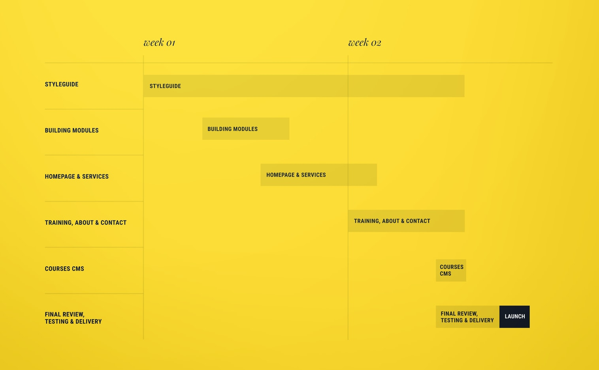
Continuous rounds of feedback and quick iteration allowed us to accomplish a tight time frame of two weeks.
Continuous rounds of feedback and quick iteration allowed us to accomplish a tight time frame of two weeks.
Presenting heavy content sections in a structured and clear way.
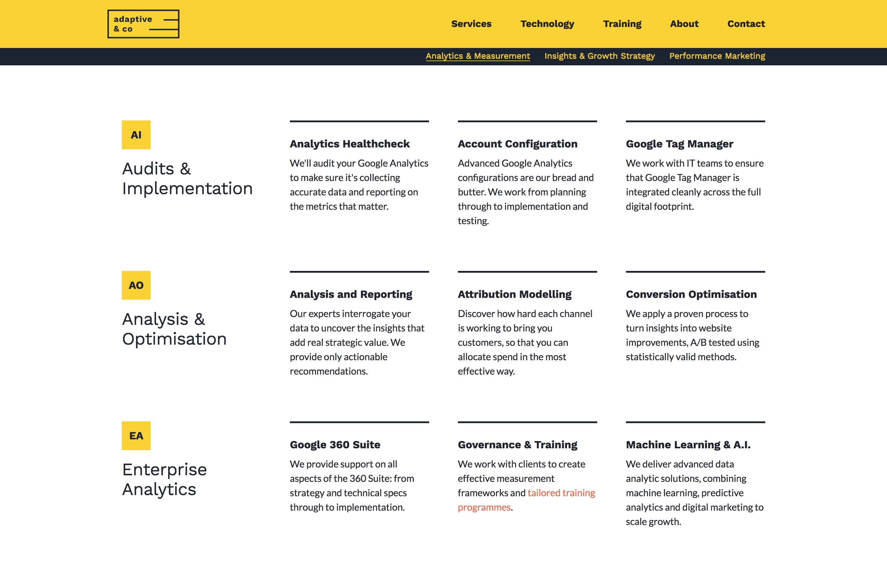
We did several iterations on Adaptive’s approach to digital growth before arriving at the desired place.
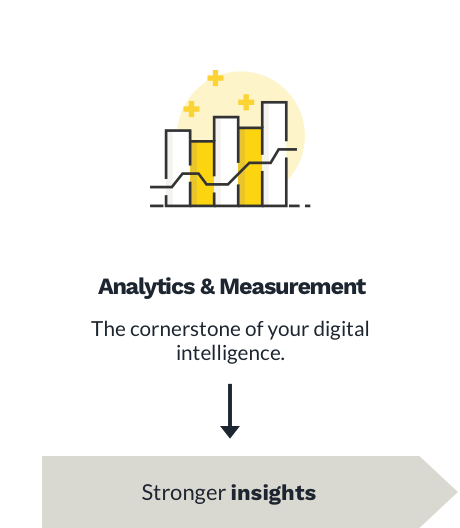
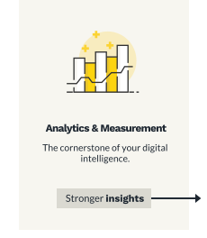
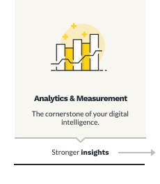
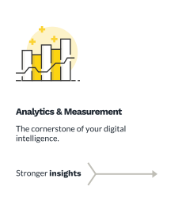
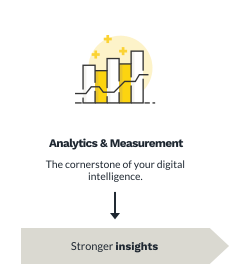
Creating a live style guide at the same time we build the site enabled us to reuse elements with ease.
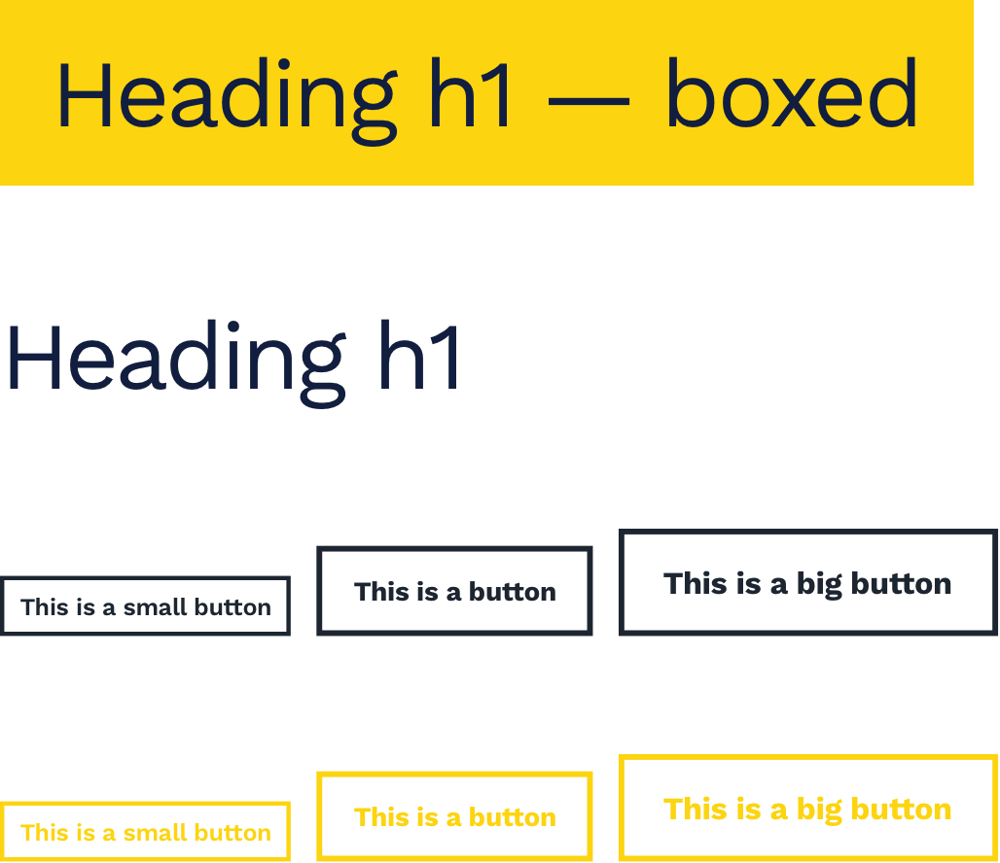
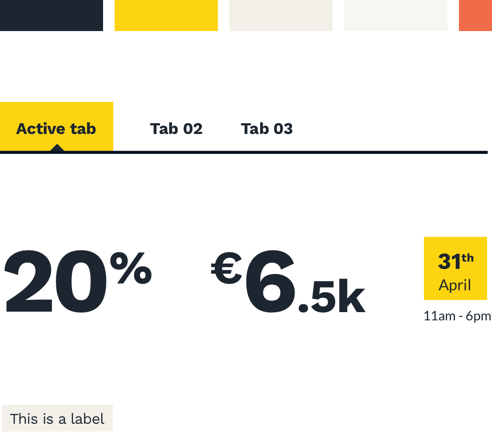
We designed different hero sections depending on the page’s content type.
Adaptive provided a set of icons that gave us the ability to communicate the concepts related to digital growth.
Icons designed by Andriy Yurchenko
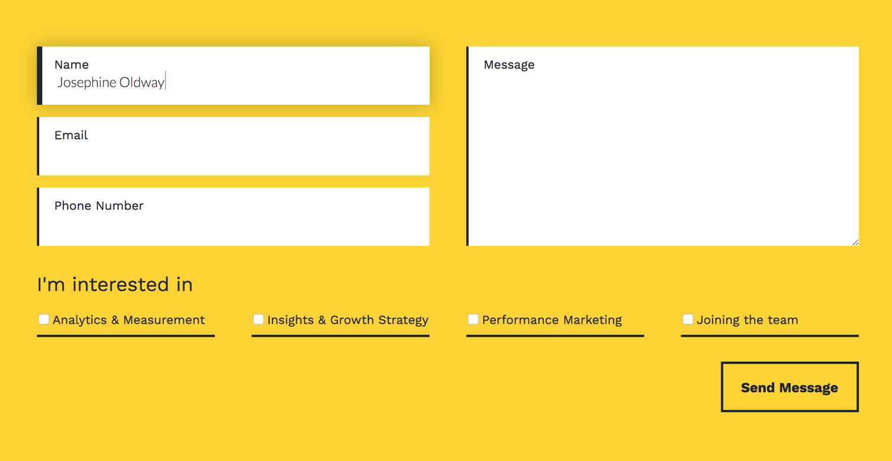
We evaluated building a content management system (CMS) for Adaptive’s training courses.
We worked with Adaptive’s dev to integrate their login functionality into the new public site.
We worked with Adaptive’s dev to integrate their login functionality into the new public site.
We helped Adaptive & Co. to build their digital campaign designing the ads for Google Display Network.
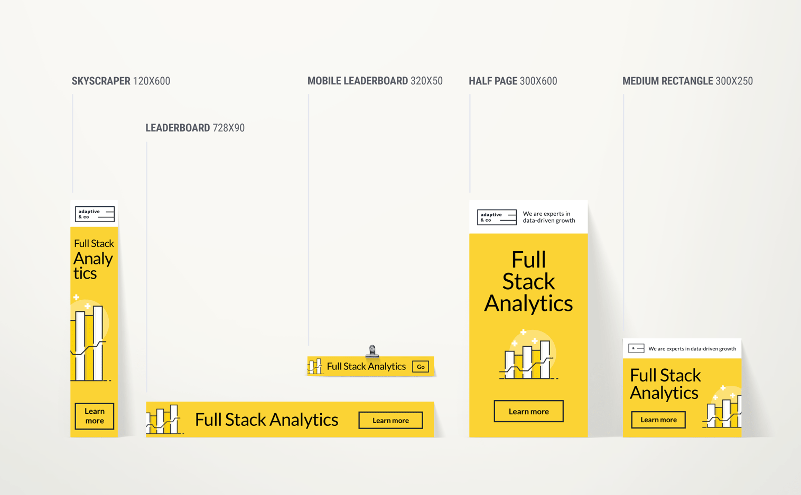

Adaptive & co.'s director
Brian's quote.
Next Project